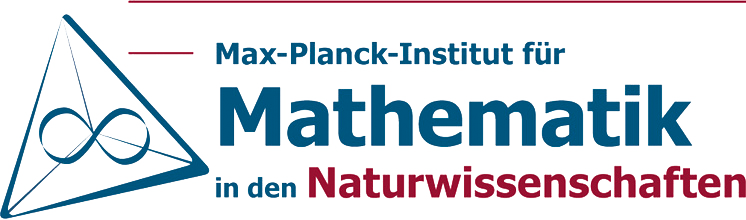
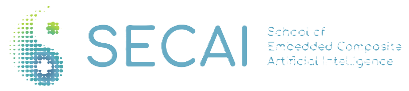

Scientific Focus
Mathematical insight for machine learning, with emphasis on theory-practice dialogue.
 Mathematics of Machine Learning
Contact
Mathematics of Machine Learning
Contact
Conference on
A focused international meeting on the mathematical structures, theoretical foundations, and practical frontiers shaping modern machine learning.
Hamburg, Germany
The meeting brings together researchers working across learning theory, optimization, geometry, approximation, generative modeling, inverse problems, and the mathematical analysis of modern AI. The 2026 edition will continue the TU Hamburg series with a more intimate, high-caliber setting for talks, discussion, and exchange.
Mathematical insight for machine learning, with emphasis on theory-practice dialogue.
Keynotes, contributed talks, poster sessions, and structured discussion time.
Researchers in mathematics, statistics, computer science, data science, and AI.
Themes
Gradient methods, stochastic dynamics, implicit bias, and training regimes.
Information geometry, optimal transport, Wasserstein methods, and natural structures.
Statistical learning theory, random matrix perspectives, and overparameterization.
Functional analytic tools, inverse problems, harmonic analysis, and regularization.
Program
Opening, keynote sessions, contributed talks, and welcome reception.
Talk sessions, poster presentations, and thematic discussion blocks.
Keynotes, contributed talks, and community exchange at TU Hamburg.
Final talks, closing discussion, and departures.
Partners

